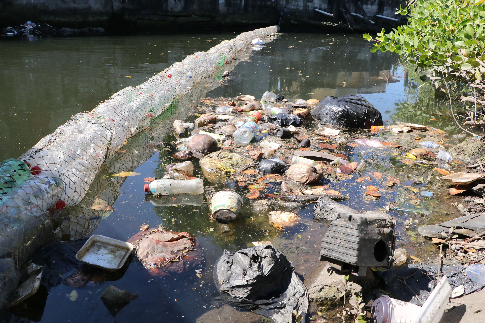

La principal causa de la contaminación por basura la encontramos en una ineficiente o nula gestión de los residuos. Hay que tener en cuenta que lo que causa la basura no es el material en sí, sino la forma en que es o no gestionada. De este modo, si tomamos como ejemplo un trozo de papel, podrá ser basura o materia prima según la manera en que se gestione cuando es inservible y se convierte oficialmente en un residuo. De esta forma, si el papel se deposita en el medio ambiente se convertirá en basura, contaminando el medio durante todo el tiempo que dure se descomposición. Por el contrario, si ese mismo papel se deposita en un contenedor de reciclaje y se procede a gestionarlo de manera adecuada, en lugar de ser basura, se convertirá en materia prima. Es decir, no es la naturaleza de los materiales, sino la gestión que se hace de ellos lo que define que un residuo se convierta en basura o no.
Así mismo, dentro de las causas también cabe mencionar que el consumismo actual cumple un papel predominante. No porque el consumismo implique, necesariamente la generación de basura, sino porque, a un mayor consumismos, mayor cantidad también de residuos, y a mayor cantidad de residuos mayor probabilidad de que no sean gestionados de forma adecuada. Es decir, el consumismo ayuda a que la gestión de los residuos no sea la adecuada, por lo que puede ser considerado como una causa indirecta de la contaminación por basuras. Sin embargo, es fundamental matizar que es la gestión (bueno o mala) de los residuos la que genera la basura.

| ant | sig | menu |